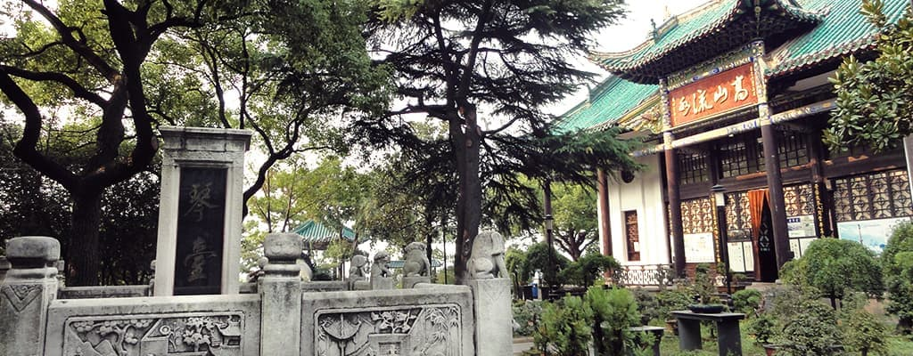
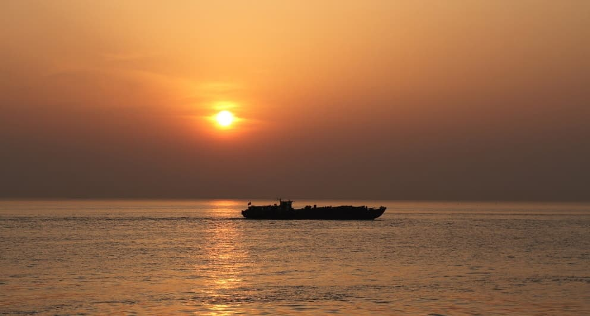
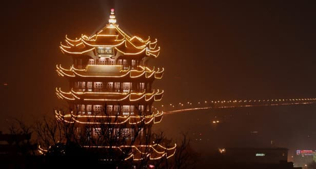

- 
-

武汉长江
长江发源于“世界屋脊”——青藏高原的唐古拉山脉各拉丹冬峰西南侧。长江干流自西而东横贯中国中部。数百条支流辐辏南北，延伸至贵州、甘肃、陕西、河南、广西、广东、浙江、福建8个省、自治区的部分地区。流域面积达180万平方公里，约占中国陆地总面积的20%。淮河大部分水量也通过大运河汇入长江。
长江干流宜昌以上为上游，长4504公里，流域面积100万平方公里，其中直门达至宜宾称金沙江，长3464公里。宜宾至宜昌河段习称川江，长1040公里。宜昌至湖口为中游，长955公里，流域面积68万平方公里。湖口以下为下游，长938公里，流域面积12万平方公里。
-
武汉长江大桥
新中国成立以后，武汉长江大桥的建设被列入中国第一个五年计划的苏联援华156项工程之一，于1950年起正式开始进行大桥的测量和设计，1955年9月动工建造，1957年10月正式通车。1956年6月，毛泽东曾由武昌游泳横渡长江，到达汉口，视察大桥施工后写下“一桥飞架南北，天堑变通途”。
大桥为双层特大钢桁梁桥，上层为双向四车道的公路桥，两侧设有人行道；下层为京广铁路复线，两列火车可同时对开；桥身共有8个桥墩，每孔跨度128米，可让万吨巨轮通行无阻。大桥的通车形成完整的京广线，极大地促进了武汉的发展，同时也成为了中国著名的旅游景点之一。2013年5月3日，56岁的武汉长江大桥入选国家重点保护文物，成为武汉市目前29处国保文物中最年轻的国保文物。
-

黄鹤楼
黄鹤楼与岳阳楼、滕王阁并称为“江南三大大名楼”。位于湖北武昌长江南岸。相传故址始建于三国，唐时名声始盛，这主要得之于诗人崔颢“昔人已乘黄鹤去，此地空余黄鹤楼”诗句。
黄鹤楼坐落在海拔高度61.7米蛇山顶，以清代“同治楼”为原型设计，楼高5层。72根圆柱拔地而起，雄浑稳健；60个翘角凌空舒展，恰似黄鹤腾飞。楼屋面用10多万块黄色琉璃瓦覆盖。
楼外铸铜黄鹤造型、胜像宝塔、牌坊、轩廊、亭阁等一批辅助建筑，将主楼烘托得更加壮丽。登楼远眺，“极目楚天舒”，不尽长江滚滚来，三镇风光尽收眼底，雄伟壮观。层层飞檐，四望如一。在主楼周围还建有胜象宝塔、碑廊、山门等建筑。整个建筑具有独特的民族风格。 -
晴川阁
晴川阁，又名晴川楼、“楚国晴川第一楼”，位于汉阳龟山东麓禹功矶上，始建于明代嘉靖26年至28（公元1547—1549）年，得名于唐朝诗人崔颢《黄鹤楼》“晴川历历汉阳树，芳草萋萋鹦鹉洲”诗句，为汉阳太守范之箴在修葺禹稷行宫（原为禹王庙）时所增建，是全国重点文物保护单位，也是武汉市著名旅游景点之一。
北临汉水，东濒长江，与“天下江山第一楼”黄鹤楼隔江相望，是武汉地区唯一一处临江而立的名胜古迹。又因与对岸黄鹤楼隔江对峙，相映生辉，被称为“三楚胜境”。
-
古琴台
古琴台，又名俞伯牙台，始建于北宋，后屡遭损毁。清嘉庆初年（公元1796年），湖广总督毕沅主持重建古琴台。位于湖北省武汉市汉阳龟山西脚下美丽的月湖之滨，东对龟山、北临月湖，是中国著名的音乐文化古迹、湖北省重点文物保护单位、武汉市著名的文物旅游景观之一，它与黄鹤楼、晴川阁并称为“武汉三大名胜”，有“天下知音第一台”之称。
-
天兴洲
天兴洲，地处武汉市青山区青山镇、江岸区湛家矶所夹的长江段江心，具有得天独厚的江岛风情景观资源，四面环江，面积约26平方公里，东西长13公里，南北宽2公里。洲头有直劈长江分二的恢弘，洲尾有两江翻腾合一的豪迈，中间有细细的沙滩，摇曳的芦苇，还有遍布洲岸的绿绿青草地都让人无限神往。天兴州近年来以年均130米以上的速度向下游漂移，且漂移速度正在加快。昔为荒岛，1949年后围垦，已经阡陌相连，为武汉市的瓜果生产基地，盛产西瓜，北岸有渡口，南岸有码头与汽车轮渡。
-

江滩公园
汉口江滩公园位于长江武汉市区北岸，面积160万平方米，与沿江大道景观相邻，与黄鹤楼景区相望，与长江百舸争流相映，构成武汉市中心区独具魅力的景观中心。
两江四堤八林带，火树银花不夜天”，这是一位诗人对武汉江滩美景的赞颂，在武汉三镇的水景中，汉口江滩公园可谓是这座滨江城市中一道最美丽的风景，三三两两的市民或游人悠闲地走在绿树繁花之中，穿行于鹅卵石铺就的小径，享受着忙碌生活中难得的闲适。